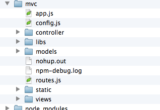

express是为NodeJS而生的高性能开发框架，目前在nodejs中是最优秀的王章开发框架。使用express可以搭建出大家熟悉而且喜欢的mvc三层框架。
express是为NodeJS而生的高性能开发框架，目前在nodejs中是最优秀的王章开发框架。使用express可以搭建出大家熟悉而且喜欢的mvc三层框架。
如果你已经在nodejs的官网下载安装了nodejs，那电脑里面已经自带默认安装好了npm。npm是用来管理nodejs包de管理工具。使用npm可以安装nodejs的各种包，下面就用npm来安装express。
在终端命令行中找到nodejs的项目目录，并输入
npm install -g express等待命令完成，电脑就已经自动安装好了
express包。
虽然看上去好像和
- var express = require('express');
- var app = express.createServer();
- app.get('*',function(req,res){
- res.json({res:"404"});
- });
- app.listen(1088);
http对象写法差不多，但是express包里面封装了多种对象，可以帮助我们很快的建立起mvc架构。
众所周知，mvc架构是由model层，controller层和view层为主的架构。下面是以express为框架搭建的一个简单的mvc架构

以上的app.js是主要的js文件，他指定文件路径和统一的http请求入口。
routes.js是自己封装的脚本文件，把http请求做统一处理。
app.js指定了view层路径，里面用来存放htm文件，代码如下
- app.configure(function(){
- app.set('view engine','htm');
- app.set('view','/views');
- app.set("view options",{layout: true });
- app.register('.htm',require('ejs'));
- })
app.js指定static为静态文件，如css，js还有img等的文件路径，代码如下
- var path = require('path');
- var static_dir = path.join(__dirname, 'static');
- app.configure('development', function(){
- app.use(express.static(__dirname + "/static"));
- app.use(express.errorHandler({ dumpExceptions: true, showStack: true }));
- });
express的configure方法还有很多用途，想要了解详细的可以点击这里
controller层是主要的业务层，所有的http请求的集中处理的层，所有的http请求都集中到controller层进行处理，下面是一段简单的代码
- exports.index = function(req,res,next){
- res.render("home/index",{error:""});
- }
如上面所示，这段代码封装了一个index方法，主要内容只是返回view里面的home文件夹下面的index.htm文件。如果需要传参，则可以直接在{error:""}里面添加json数据即可在页面接收。
把上述的代码存在index.js中，那么这个时候我们就可以在别的文件中调用到这个方法。为了方便编码，我们把所有的入口封装在routes.js中，以便集中管理，代码如下
- var Index = require('./controller/index.js');
- exports = module.exports = function(app){
- app.get('/index.htm',Index.index);
- app.get('*',function(req,res){
- res.json({res:"404"});
- });
- }
我们使用require方法把刚才封装好的index.js导入，当http请求为/index.htm时，就会执行index.js中的index方法，将view层的index.htm文件下载到浏览器中展现。而且我们现在也看到routes.js中，也把自己封装成了一个方法，在app.js中只用使用以下代码，就可以调用
- var routes = require('./routes');
- routes(app);
此时，一套完整的流程就可以走通了。
其中model层会在下面的nodejs连接数据库的时候讲到，所以这里略过。